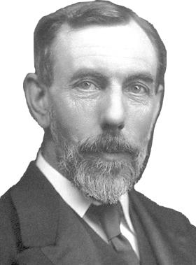

Sir
William Ramsay (Glasgow, 1852. október 2. – High Wycombe, 1916. július 23.) skót kémikus. Felfedezte az argon, neon, kripton és xenon nemesgázokat, valamint elsőként izolálta a héliumot, aminek addig csak a színképét ismerték a Napból. 1904-ben kémiai Nobel-díjban részesült.
Pályája
William Ramsay 1852. október 2-án született Glasgow-ban id. William Ramsay mérnök és felesége, Catherine Robertson egyetlen gyermekeként. Nagybátyja a neves geológusa, Sir Andrew Ramsay volt. Kálvinista nevelésben részesült, és amikor 1866-ban befejezte a középiskolát a Glasgow Academy-ben, a Glasgowi Egyetemen kezdett klasszikus irodalmat tanulni. Papnak szánták, de érdeklődése a természettudományok, azon belül a kémia felé fordult. Fizikatanára Lord Kelvin volt. 1869-től másfél évig vegyésztechnikusként dolgozott egy laboratóriumban, majd 1871 áprilisában Németországba utazott, hogy a Tübingeni Egyetemen Wilhelm Rudolph Fittignél folytassa tanulmányait. 1872-ben, 19 évesen megvédte doktori disszertációját, amelyet a toluilsav és nitrotoluilsav kémiai tulajdonságairól írt.
Miután visszatért Glasgow-ba, az Anderson’s College-ben, Georg Bischof asszisztenseként kezdett dolgozni. 1874-től előadásokat tarthatott és megjelent első önálló közleménye. 1880-ban kinevezték a kis Bristoli Főiskola (University College, Bristol) kémiaprofesszorává, majd a következő évtől ő töltötte be az igazgatói posztot is. 1887-ben a University College London kémiatanáraként folytatta pályafutását. Itteni laboratóriumában huszonöt éven át, egészen visszavonulásáig végezte kísérleteit.
Munkássága
Ramsay tudományos munkássága négy szakaszra osztható: a glasgow-i (1874–1880), ahol többnyire szerves kémiával foglalkozott; a bristol-londoni (1880–1894), melyben a folyadékok és gőzök kritikus állapotait vizsgálta; a korai londoni szakasz (1894–1900), ahol a nemesgázokra koncentrált; és a kései londoni periódus (1901–1916), amikor a radioaktivitás jelenségét tanulmányozta.
Glasgow-ban első mentorától, John Fergusontól megörökölt egy adag piridinbázis preparátumot, amelyből különféle oxidációs kísérletekkel piridinsavakat nyert és sikerült szintetizálnia a piridint. Vizsgálta az általa készített piridinsavak és az olyan alkaloidokból képzett savak közötti kapcsolatot, mint a kinin és a kinkonin. Ramsay az elsők között volt, akik megfelelő magyarázatot tudtak adni a Brown-mozgás jelenségére.
Elismerései
- íj (1895)
- Barnard-érem (1895)
- Longstaff-érem (1897)
- Davy-érem (1895)
- A Fürdőrend parancsnoki fokozata (1902)
- Kémiai Nobel-díj (1904)
- Matteucci-érem (1907)
- Elliott Cresson-érem (1913)
- Pour le Mérite
- Francia Becsületrend
1888-ban a Royal Society tagjává választotta. Tiszteletbeli tagja volt Írország, Németország, Csehország, Hollandia, Olaszország, Oroszország, Ausztria, Románia, Norvégia és Svédország tudományos akadémiáinak.
Született
Elhunyt
Nemzetisége
Foglalkozása
Iskolái
Kitüntetései
1852. október 2.
Glasgow |
1916. július 23. (63 évesen)
High Wycombe |
skót |
kémikus |
Glasgowi Egyetem
Tübingeni Egyetem |
Davy-érem (1895)
Kémiai Nobel-díj (1904) |